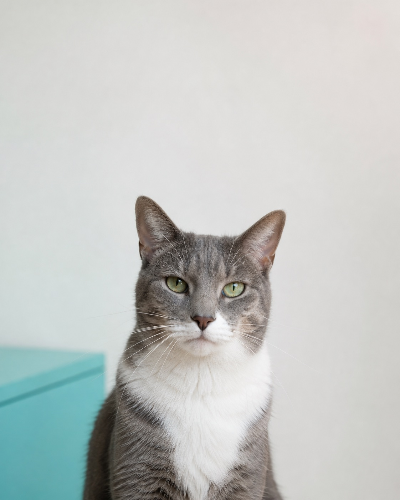
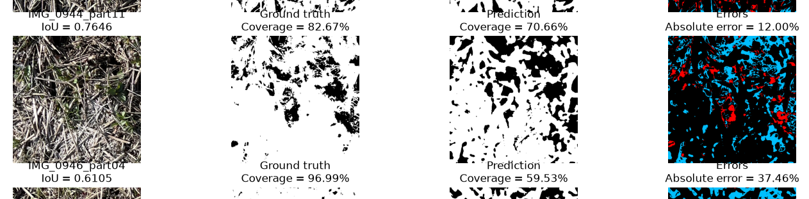

Education
Expected 2027University of Glasgow
BSc (Hons) Mathematics and Computing Science
Glasgow, United Kingdom · 2022–2027
Machine Learning
Computer Vision
Algorithms
Networked Systems
I'm Yuhe Lu, a Math & Computing Science student at University of Glasgow.
01
I build machine learning systems that are supposed to work in the real world — then I find out where they don't.
I'm Yuhe Lu 陆禹翮, studying Mathematics and Computing Science at the University of Glasgow, graduating in 2027. Most of what's on this page comes out of one habit: build something, then go looking for the conditions under which it stops working.
My clearest example so far is a project segmenting crop residue in field images. The model did well in testing, but accuracy fell on locations it hadn't seen before, and it did worst on the highest-coverage images — a condition the training data barely represented. That failure taught me more about what "reliable" actually requires than any of the cases where the model worked fine.
That's the question I want to keep asking: whether it keeps performing once the conditions around it change. One project isn't enough to answer that yet, but it's the direction I want the rest of this to go.

Education
Expected 2027BSc (Hons) Mathematics and Computing Science
Glasgow, United Kingdom · 2022–2027
02

Completed · Summer 2026
An end-to-end computer vision project for segmenting crop residue in field images and estimating surface coverage, with a focus on generalisation across collection sites.
Automate residue coverage measurement from field photographs despite changes in soil, lighting, vegetation, and camera conditions.
Established a Random Forest baseline, built a Mini U-Net from scratch, and developed a stronger U-Net with an ImageNet-pretrained ResNet34 encoder using segmentation_models_pytorch.
Used location-level training, validation, and held-out test splits, evaluated with IoU, Dice, precision, recall, and coverage MAE, and tested SRPNet as an external cross-domain reference.
Compared with the Mini U-Net, the final model improved IoU from 0.778 to 0.826 and reduced coverage MAE from 11.73 to 7.71 percentage points.
Next
More work will be added here, including my final-year project and future research-focused builds.
03
Programming
ML & computer vision
Tools
Research interests
Let’s connect
If you’d like to discuss an opportunity, a project, or a shared research interest, feel free to get in touch.